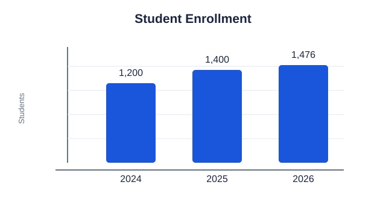

Accessible Images
Alternative text depends on an image's purpose. Describe meaningful information, use empty alternative text for decoration, describe a link's destination, and summarize the important data in a chart's alternative text.
1. Informational image
2. Decorative image
The graphic below is ornamental and adds no information.
Use alt="" so assistive technology can skip decoration.
3. Linked image
The image's alternative text tells visitors where the link goes.
4. Chart with key data
